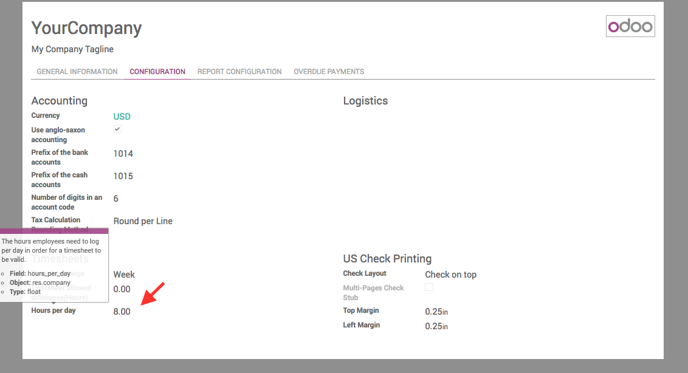
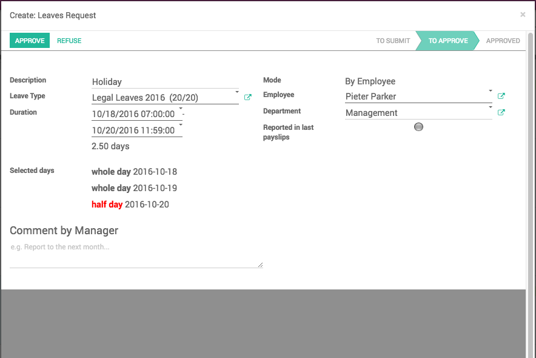
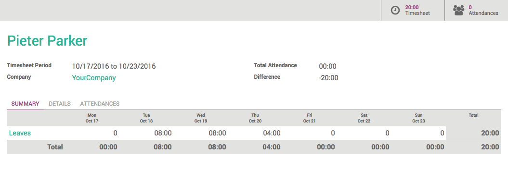

Display leaves automatically in your timesheets

This module will display the employee's holidays in their timesheet once they are approved.

User Guide
Configuration

- Define the number of hours your employee should work per day: Settings > Company > Configuration (default is 8 hours)
- This number will then be used to log a day of leave in the timesheet
How to use
Once your company is configured, everything is set. The users can now make leave request.


As soon as the leave is approved, it will appear in your employee's timesheet in the line Leaves. If they took a full day off, it will be logged with the number of hours configured in the company settings. If they took half a day off, it will be logged with half of the amount.